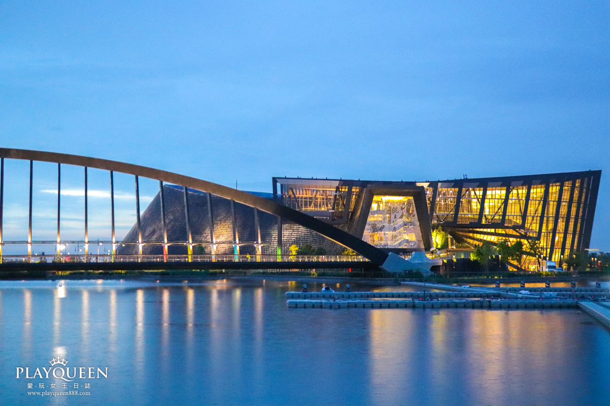
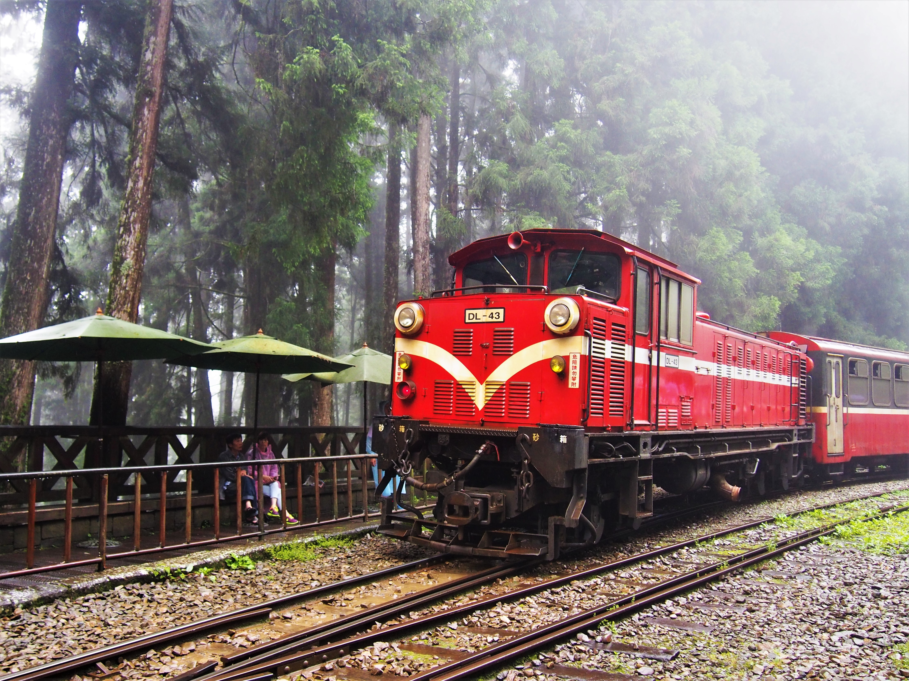
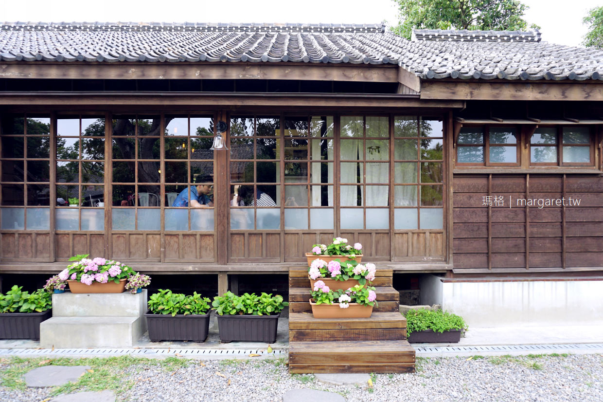

南故宮
國立故宮博物院南部院區，簡稱故宮南院，俗稱南故宮或嘉義故宮，
為國立故宮博物院轄下兩座主院區之一。
故宮南院坐落在臺灣嘉義縣太保市，鄰近高鐵嘉義站和蒜頭糖廠。
以蒐藏、研究、教育、展示亞洲藝術品與相關文物為定位，
另設有人工湖和主題花園等。

阿里山
阿里山鄉位於臺灣嘉義縣東部，北鄰南投縣竹山鎮，東鄰南投縣信義鄉、
高雄市桃源區，西鄰梅山鄉、竹崎鄉、番路鄉，
南接大埔鄉與高雄市那瑪夏區，是嘉義縣面積最大、人口密度最低的鄉鎮，
其面積約佔全縣的1/5，也是嘉義縣唯一的山地鄉。

檜意森活村
檜意森活村是嘉義市東區旅遊景點之一，是臺灣第一座以森林為主題的
文創園區，其是由共和路與林森東路間原林務局的宿舍整修而成，
占地約3.4公頃，並在忠孝路與林森東路路口設有「農業精品館」。
園區內包含了28棟歷史建築「嘉義市共和路與北門街林管處國有宿眷舍」
以及市定古蹟「嘉義營林俱樂部」。